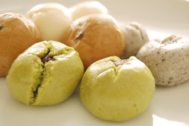
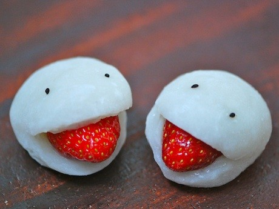

 Manju is a classic Japanese confectionery (wagashi). When you crave for a fun, sweet treat, these dumplings will hit the spot!
 Daifuku is rice cake with Anko, sweet red bean paste, inside. Daifuku is one of the most traditional but very popular Japanese sweets.
 Dango is a general name for small ball-shaped mochi dumplings. Usually the mochi itself is not sweetened, but toppings and sauces are.
Dango is a general name for small ball-shaped mochi dumplings. Usually the mochi itself is not sweetened, but toppings and sauces are.
 Tayaki is a warm fish-shape cake with red bean filling. This waffle-like Japanese snack is very popular at street fairs and festivals in Japan.
Tayaki is a warm fish-shape cake with red bean filling. This waffle-like Japanese snack is very popular at street fairs and festivals in Japan.
 Mochi is Japanese sticky rice cake used both in savory and sweet dishes. Mochi is usually made from sweet rice (also called Mochi rice) cooked and pounded until it becomes a paste that is very sticky and smooth, then formed into cakes or blocks.
Mochi is Japanese sticky rice cake used both in savory and sweet dishes. Mochi is usually made from sweet rice (also called Mochi rice) cooked and pounded until it becomes a paste that is very sticky and smooth, then formed into cakes or blocks.